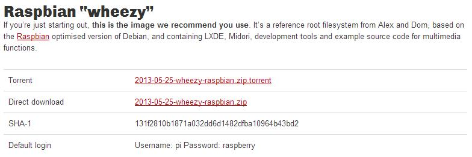
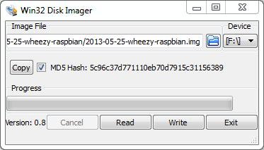
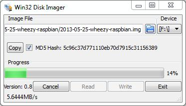
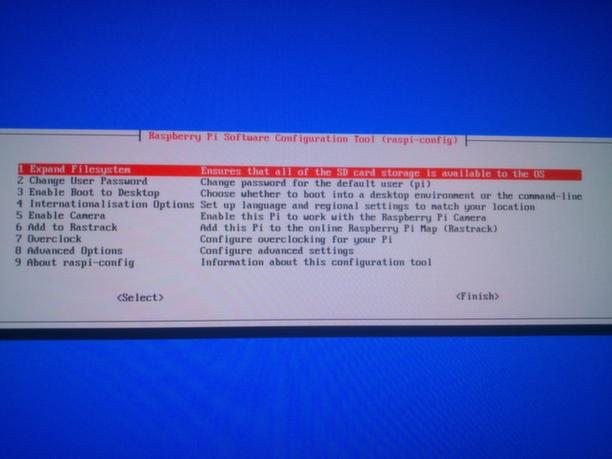
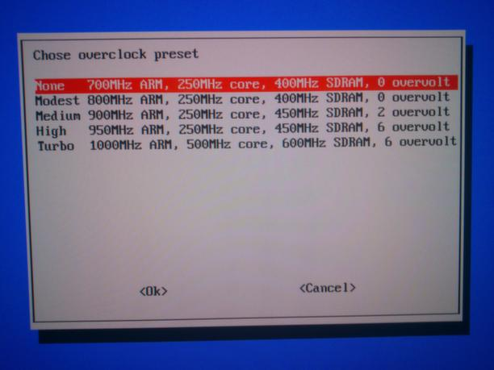

Instalar Raspbian
Raspbian se instala como muchas otras distribuciones y sistemas operativos para Raspberry, debemos utilizar un software o programa para cargar un archivo .img en una tarjeta de memoria SD que después insertaremos en nuestro Raspberry.
Primero descargamos la última versión de Raspbian desde el sitio web de Raspberry Pi que puedes encontrar en la siguiente dirección: http://www.raspberrypi.org/downloads
Puedes realizar la descarga por torrent o mediante descarga directa, en ambos casos el archivo descargado será un .zip que debemos descomprimir para obtener el archivo .img con el que cargaremos el sistema operativo en la tarjeta SD.

Ahora vamos a cargar el archivo .img con un programa para esto, existen varias aplicaciones para este fin, aunque en este caso como lo voy a hacer desde Windows voy a utilizar el programa Win32 Disk Imager que puedes descargar desde aquí: http://sourceforge.net/projects/win32diskimager/
Después de ejecutarlo la aplicación Win32 Disk Imager debes ver una ventana parecida a esta:

Seleccionamos el archivo .img en “Image File” y la unidad donde está la tarjeta SD en “Device”. Después pulsa el botón “Write” para comenzar con la carga del sistema en la tarjeta SD. La copia comenzara, ahora debemos esperar a que termine, en la parte de abajo de la ventana de Win32 Disk Imager nos mostrara la velocidad en MB/s.

Al finalizar retiramos la tarjeta SD del ordenador desde el que hemos cargado el sistema y la conectamos a nuestro Raspberry Pi, después arrancamos nuestro dispositivo y esperamos a que termine de cargar.
Si todo ha salido correctamente podremos ver en pantalla una ventana parecida a esta:

Aquí podemos encontrar varias opciones importantes a la hora de realizar la configuración inicial de nuestro Raspbian en nuestro Raspberry Pi. Voy a explicarlas un poco por encima:
1. Expand Filesistem: Expande el tamaño de la partición de almacenamiento del sistema hasta el tamaño total de la tarjeta SD donde está instalado.
2. Change User Password: Permite cambiar la contraseña por defecto de Raspbian, la contraseña por defecto para el usuario “pi” es “raspberry”.
3. Enable Boot to Desktop: Permite habilitar el inicio del escritorio al arrancar el dispositivo.
4. Internationalistation Options: Permite cambiar las opciones regionales y de idioma de Raspbian.
5. Enable Camera: Permite activar la cámara de Raspberry Pi en caso de tenerla conectada.
6. Add to Rastrack: Permite añadir tu dispositivo Raspberry al registro de Rasperrys de la comunidad.
7. Overclock: Permite configurar el overclock del procesador de nuestro dispositivo Raspberry Pi. La fundación Raspberry permite realizarle un overclock moderado al procesador de forma segura sin peligro de quemar el dispositivo.
8. Advanced Options: Ofrece algunas opciones añadidas a la configuración de nuestro Raspberry Pi, explico con más detalle más abajo.
9. About raspi-config: Muesta información acerca del asistente que estas utilizando en este preciso instante para configurar Raspberry Pi.
La sección de Overclock tiene varios perfiles preconfigurados mediante los cuales podemos subir la frecuencia de trabajo del procesador, la frecuencia de las memorias y el overvolt. La fundación Raspberry asegura que podemos hacerlo de forma segura, pero debemos tener en cuenta que cuanto más forcemos nuestro procesador, iremos acortando la vida de nuestro dispositivo.
Como recomendación personal, si no dispones de un sistema de refrigeración activo para tu Raspberry, no te molestes en hacer overclock de forma segura.

En la sección “Advanced Options” podemos acceder a la configuración de algunos parámetros importantes de nuestro Raspberry, que aunque ya vienen configurados por defecto, es posible cambiarlos:
A1 Overscan: Permite configurar las bandas superior e inferior de nuestra pantalla para colocar y calibrar la posición de la imagen.
A2 Hostname: Permite configurar el nombre del dispositivo Raspberry en la red.
A3 Memory Split: Raspbery Pi tiene 512 de memoria RAM en su versión más potente, estos 512 de RAM son compartidos con la memoria de video, mediante esta opción puedes partir cuanta memoria quieres para el sistema y cuanta memoria quieres que tenga el procesador gráfico para funcionar. Si vas a usar Raspberry como servidor puedes utilizar el mínimo de memoria de video.
A4 SSH: Permite activar o desactivar el acceso remoto mediante SSH a tu Raspberry Pi.
A5 Update: Permite actualizar el asistente raspi-config a la última versión disponible.
Requerimientos

Instalar Pure Data